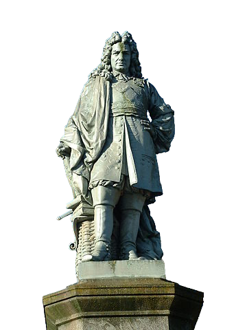

L’infatigable VAUBAN
Sébastien Le Prestre, marquis de Vauban, dit Vauban, est un ingénieur, architecte militaire, urbaniste, hydraulicien et essayiste français.
Il conçoit ou améliore une centaine de places fortes. L'ingénieur n'a pas l'ambition de construire des forteresses inexpugnables : la stratégie consiste plutôt à gagner du temps en obligeant l'assaillant à mobiliser des effectifs dix fois supérieurs à ceux de l'assiégé.
Douze ouvrages de Vauban, regroupés au sein du réseau des sites majeurs de Vauban, sont classés au patrimoine mondial de l'UNESCO.
Le musée des Plans-reliefs aux Invalides à Paris et le musée des Beaux-Arts de Lille accueillent l'essentiel des maquettes et des plans-reliefs des places ou des ouvrages construits ou remaniés par Vauban.